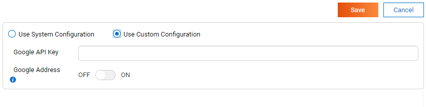
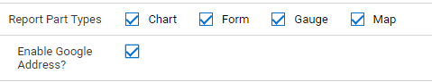

System Configuration/Google Map¶
The System Configuration/Google Map page allows user to set up email sending options.
In browser, log in to Izenda as a user with System Configuration permission.
Click Settings, then System Configuration then Google Map in the left menu.
Select the Setting Level: either System or a specific tenant.
For tenant level, select to re-use configuration from system or to define a separate one.
Fig. 124 Google Map Configuration
Enter an Google Map API Key in the proper textbox. Please refer to Google Map Javascrip API for the guide to register a key with Google.
Turn Google Address toogle ON or OFF to define whether the tenant can use the Geocoding service to draw Google map as Address level or not. Please refer to Google Geocoding Service for more details.
{kind=link}
Note
Please note that the Google Map API key as well as Geocoding service will be validated from Google side.
Turn ON the Google Address for a tenant that means users in tenant can user the Geocoding service to load the Google Map part as Address Point Option. To specify tenant user can create Google Map part with Address, please turn ON the Tenant Setup > Permission
Fig. 125 Google Address permission
{kind=link}